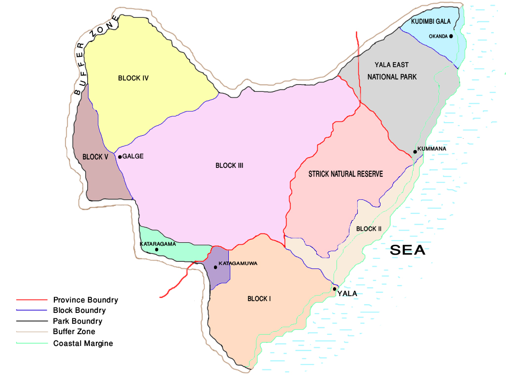

Yala (යාල) National Park is the most visited and second largest national park in Sri Lanka, bordering the Indian Ocean. The park consists of five blocks, three of which are now open to the public. Yala was designated as a wildlife sanctuary in 1900, along with Wilpattu, designated in 1938, as the first two designated national parks in Sri Lanka. The park is best known for its variety of wildlife and is important conservation of Sri Lankan elephants, Sri Lankan leopards and aquatic birds
In 1560 Spanish cartographer Cipriano Sanchez noted Yala in his map "is abandoned for 300 years due to insalubrious conditions." Chief Justice Sir Alexander Johnston wrote a detailed account on Yala in 1806 after travelling from Trincomalee to Hambantota. On March 23, 1900, the government proclaimed Yala and Wilpattu reserves under the Forest Ordinance.[2] Initially the extent of the reserve was 389 square kilometres (150 sq mi) between the Menik and Kumbukkan Rivers. At that time the reserve did not bear the name Yala. The Game Protection Society (now the Wildlife and Nature Protection Society) was instrumental in establishing the reserve. The forest area between Palatupana and Yala was declared a hunting site reserved only for the resident sportsmen.
The Yala area is mostly composed of metamorphic rock belonging to the Precambrian era and classified into two series, Vijayan series and Highland series. Reddish brown soil and low humic grey soil are prominent among six soil types. Yala is situated in the lowest peneplain of Sri Lanka, which extends from Trincomalee to Hambantota.
The area of Yala National Park expands upto 978.807 km2 (377.919 sq mi) approximately. The sub-sections and constituents of the park can be seen in the image given below. 